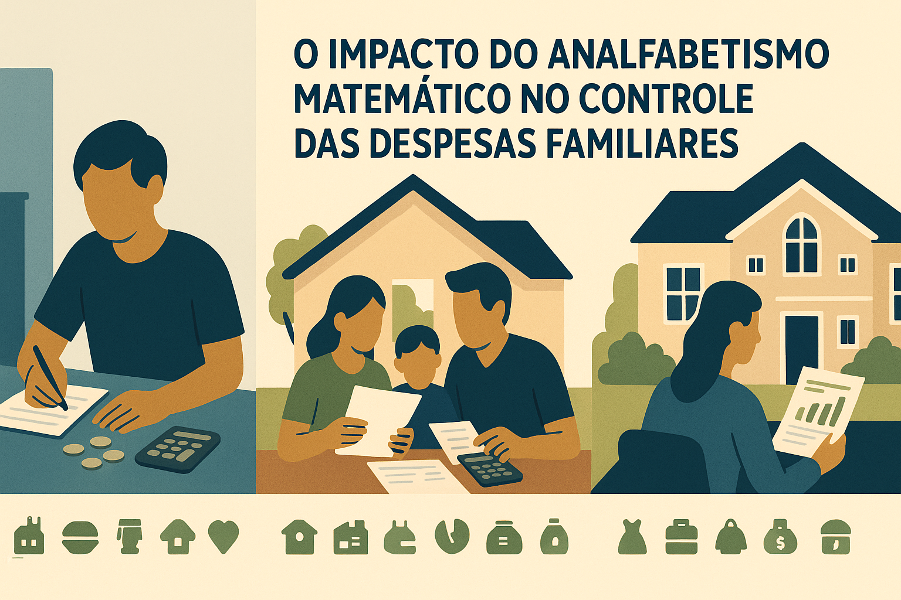

O Impacto do Analfabetismo Matemático no Controle das Despesas Familiares: Uma Análise em 10 Categorias

Figura — Perfis familiares e categorias de despesas mensais.
Você já sentiu que o dinheiro some antes do fim do mês, mesmo sem grandes gastos? Muitas vezes, o problema não está apenas na renda, mas na dificuldade de controlar as contas do dia a dia. Saber somar e subtrair despesas é fundamental para manter o orçamento em ordem. Neste artigo, vamos mostrar como a falta de conhecimentos matemáticos básicos pode atrapalhar o controle financeiro da família, usando exemplos simples e reais de diferentes perfis de renda.
O foco será mostrar como o analfabetismo matemático básico (somar e subtrair) pode comprometer o controle financeiro familiar, explorando 10 categorias de despesas mensais em três perfis: família pobre, classe média e rica.
10 Itens que Classificam as Despesas Mensais de uma Família
O impacto do analfabetismo matemático básico no orçamento doméstico
A vida financeira de uma família pode ser resumida em uma conta simples de mais e menos: entradas (salário, renda extra) menos saídas (despesas fixas e variáveis).
O problema é que, para muita gente, a conta não fecha. E muitas vezes isso não acontece por falta de renda, mas sim por analfabetismo matemático básico: a dificuldade de organizar, somar e subtrair gastos do dia a dia.
Neste artigo, vamos analisar 10 categorias de despesas mensais, comparando três perfis de famílias brasileiras:
| Categoria | Família pobre | Classe média | Família rica |
|---|---|---|---|
| Moradia | Grande parte da renda (muitas vezes >30%); aluguel instável. | 25–30% em aluguel ou financiamento; parcelas e juros aumentam o gasto. | 15–20% em imóveis caros; pode haver mais de uma residência. |
| Alimentação | Cesta básica; pequenas compras diárias somam muito ao mês. | Compras mensais no mercado; restaurantes e entregas aumentam o custo. | Refeições fora, alimentos caros e entregas frequentes. |
| Transporte | Transporte público; gasto variável conforme distância. | Carro (parcela, combustível, seguro, manutenção). | Vários carros, motorista e viagens frequentes. |
| Educação | Escola pública (custos indiretos: material e transporte). | Escolas particulares, cursos e faculdade; mensalidades pesam no orçamento. | Educação privada de alto custo, intercâmbios e taxas elevadas. |
| Saúde | Uso do SUS; remédios e consultas pontuais podem pesar. | Plano de saúde e gastos com consultas ou tratamentos extras. | Planos caros e tratamentos particulares frequentes. |
| Contas Fixas | Planos básicos; risco de contas atrasadas e dívidas. | Internet, TV e celular em planos pagos; serviços extras. | Contas maiores e possivelmente duplicadas por mais de uma casa. |
| Lazer | Opções baratas ou gratuitas. | Cinema, viagens curtas e shows; gasto planejado ou parcelado. | Viagens internacionais, resorts e clubes exclusivos. |
| Vestuário | Compras emergenciais e econômicas. | Compras sazonais e promoções. | Roupas de marca e compras frequentes. |
| Dívidas e Financiamentos | Empréstimos e cartão; juros altos comprometem o orçamento. | Financiamentos (casa, carro); parcelas aumentam o custo final. | Empréstimos maiores; uso de crédito para investimentos ou compras grandes. |
| Poupança / Investimentos | Quase nada sobra para poupar. | Reserva de emergência e investimentos simples quando sobra. | Poupança e investimentos variados (imóveis, negócios, aplicações). |
Notas rápidas:
- Tabela simplificada para facilitar a comparação.
- Muitos problemas vêm de não somar pequenas despesas, não prever aumentos e não calcular juros.
Família pobre: renda limitada, foco na sobrevivência.
Classe média: alguma margem de consumo e endividamento.
Família rica: maior renda, mas também maiores responsabilidades financeiras.
1. Moradia (Aluguel ou Financiamento)
Pobre: até 40% da renda comprometida com aluguel em bairros periféricos.
Classe média: 25% a 30% da renda em financiamento ou aluguel em regiões centrais.
Rica: 15% a 20%, mas em imóveis de alto padrão — muitas vezes mais de uma propriedade.
Erro comum: não calcular corretamente quanto do salário vai para a casa, ultrapassando limites saudáveis.
2. Alimentação
Pobre: cesta básica, compras pequenas, impacto enorme no orçamento (30% ou mais).
Classe média: mercado mensal, gastos com restaurantes ocasionais.
Rica: alimentação de qualidade, restaurantes caros, delivery frequente.
Analfabetismo numérico: não somar pequenas compras diárias (pães, cafés, lanches), que no mês viram centenas de reais.
3. Transporte
Pobre: ônibus e transporte público, muitas vezes sem desconto mensal.
Classe média: carro financiado, gasolina, seguro e manutenção.
Rica: mais de um carro na garagem, motorista, viagens aéreas frequentes.
Observação: o custo real do carro é mal calculado: a maioria só lembra da parcela e do combustível, mas esquece seguro e manutenção.
4. Educação
Pobre: escola pública, sem custos diretos, mas despesas indiretas (uniforme, transporte).
Classe média: escola particular, cursos de idiomas, faculdades.
Rica: escolas e universidades privadas de elite, intercâmbios.
Erro de cálculo: não prever reajustes anuais das mensalidades.
5. Saúde
Pobre: SUS, gastos eventuais com farmácia.
Classe média: plano de saúde básico, consultas particulares quando necessário.
Rica: planos premium, tratamentos particulares, médicos de referência.
Gasto invisível: remédios mensais que, somados, pesam tanto quanto uma conta fixa.
6. Contas Fixas (Água, Luz, Internet, Celular)
Pobre: planos básicos, mas contas atrasadas viram dívidas.
Classe média: pacotes de TV a cabo, internet rápida, celular pós-pago.
Rica: múltiplas residências, contas duplicadas.
Exemplo: não somar contas parceladas no cartão que se repetem todos os meses.
7. Lazer
Pobre: bares de bairro, TV aberta, eventos comunitários.
Classe média: cinemas, viagens nacionais, shows.
Rica: viagens internacionais, resorts, clubes exclusivos.
Atenção: muitos esquecem de incluir lazer no orçamento, transformando-o em dívida no cartão.
8. Vestuário
Pobre: compras emergenciais (quando a roupa rasga).
Classe média: trocas sazonais, promoções, moda fast fashion.
Rica: grifes, compras frequentes, peças de alto valor.
Erro comum: gastar em liquidações sem perceber o impacto acumulado.
9. Dívidas e Financiamentos
Pobre: empréstimos pessoais, cartão de crédito rotativo.
Classe média: financiamento de carro e imóvel, cartão parcelado.
Rica: grandes financiamentos, investimentos alavancados.
Armardilha: a falta de somar juros transforma dívidas pequenas em bolas de neve.
10. Investimentos e Poupança
Pobre: quase inexistente, sobra zero no fim do mês.
Classe média: poupança, fundos básicos, previdência privada.
Rica: aplicações diversificadas, imóveis, negócios próprios.
Erro básico: acreditar que investimento só começa quando “sobra muito”, e nunca quando “sobra pouco”.
Conclusão
O orçamento familiar é uma simples equação de mais e menos. Mas o analfabetismo matemático básico faz com que famílias de todas as classes sociais caiam nas mesmas armadilhas: não somar gastos pequenos, não calcular juros, não prever reajustes e não organizar o orçamento.
A diferença entre pobre, classe média e rico não está apenas na renda, mas em como cada família faz as contas. No fim, quem domina a matemática básica de somar e subtrair tem mais chances de conquistar estabilidade financeira — independentemente da classe social.
Resumindo: controlar as despesas da família não precisa ser complicado. Com atenção aos gastos e um pouco de organização, é possível evitar dívidas e viver com mais tranquilidade. O mais importante é não ter medo dos números: somar e subtrair as contas do mês pode fazer toda a diferença no seu bolso.
Hashtags: #EducaçãoFinanceira #OrçamentoFamiliar #MatemáticaBásica #PlanejamentoFinanceiro #ConsumoConsciente #Juros #Despesas #Família